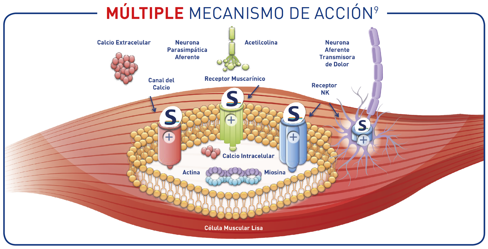
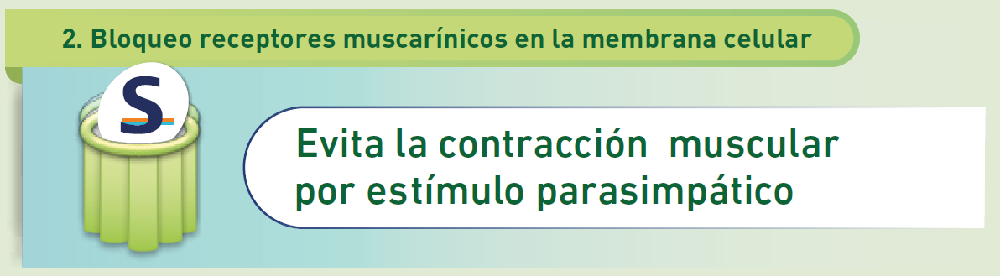

El dolor abdominal en el SII se debe a:
Hipercontractibilidad
de la musculatura lisa.
Hipersensibilidad
visceral con cambios en el proceso central del dolor visceral.

Canal del calcio
Receptor Muscarínico
Receptor NK1
Receptor NK2
×
×

×
×